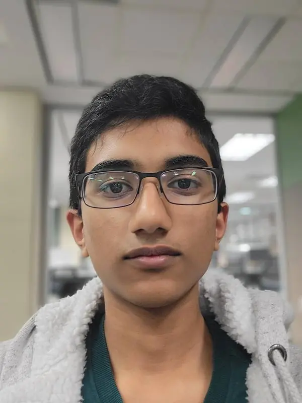
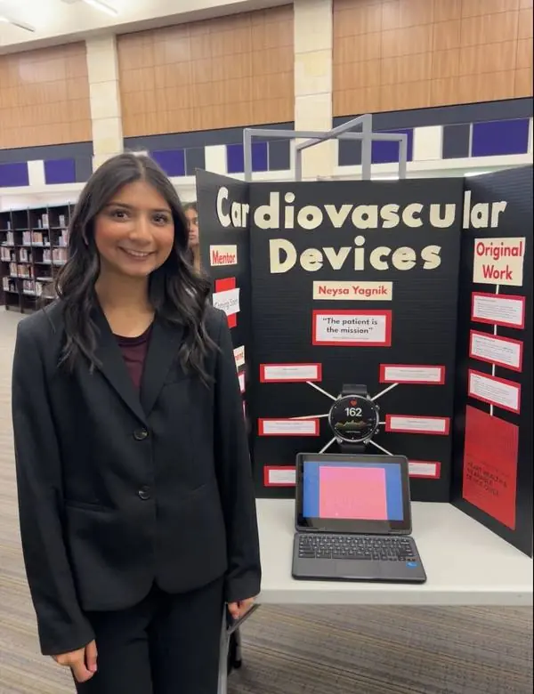

Meet the team.
Here's the team!
Pranay Pottipati
Director. Sets the vision for Project ModAnatomy — guiding design priorities, partnerships, and the rental-library goal.
In their words[Ask Pranay for 1–2 sentences — why this project, what they do.]

Akhil Tumati
Co-Director / Engineer Lead. Leads prototyping — pistons, sealing, 3D-printed chambers — built classroom-ready.
In their words[Ask Akhil for 1–2 sentences — why this project, what they do.]

Aditya Ranjithkumar
Social Media Lead. Shares the build — prototypes, classroom moments, and progress updates.
In his wordsI joined ModAnatomy because I'm passionate about medicine and wanted to help make anatomy more interactive, engaging, and easier for anyone to understand. I'm excited to be part of a team that's rethinking how people learn the human body and making anatomy feel more alive.
"Revolutionizing anatomy, one heartbeat at a time."

Neysa Yagnik
Educational Content Lead. Turns mechanics into lessons — guides and explanations teachers can use.
In her wordsI’m a senior at Independence High School interested in healthcare, research, & education. In the future, I hope to work in pediatrics and explore how new innovations can improve healthcare for children.
I joined ModAnatomy because I liked the focus on creating educational anatomy tools, and wanted to learn how to turn that interest into something that can make anatomy more engaging and accessible for students!